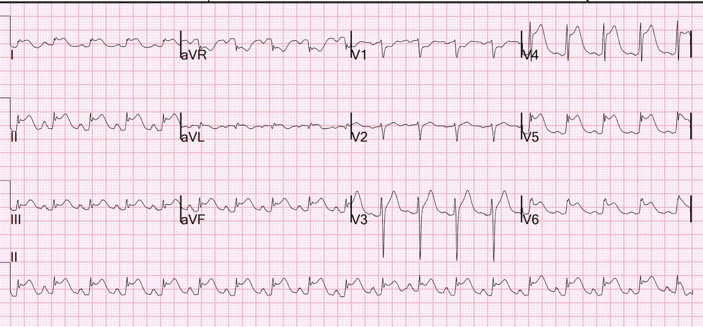
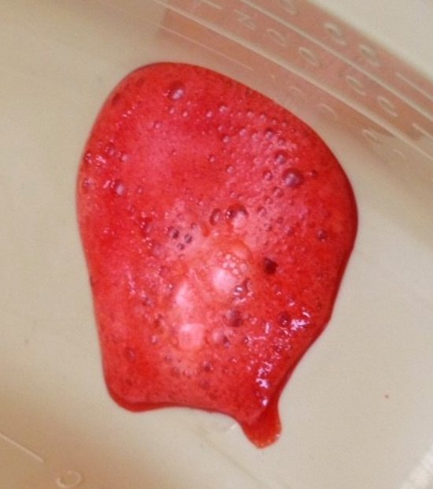
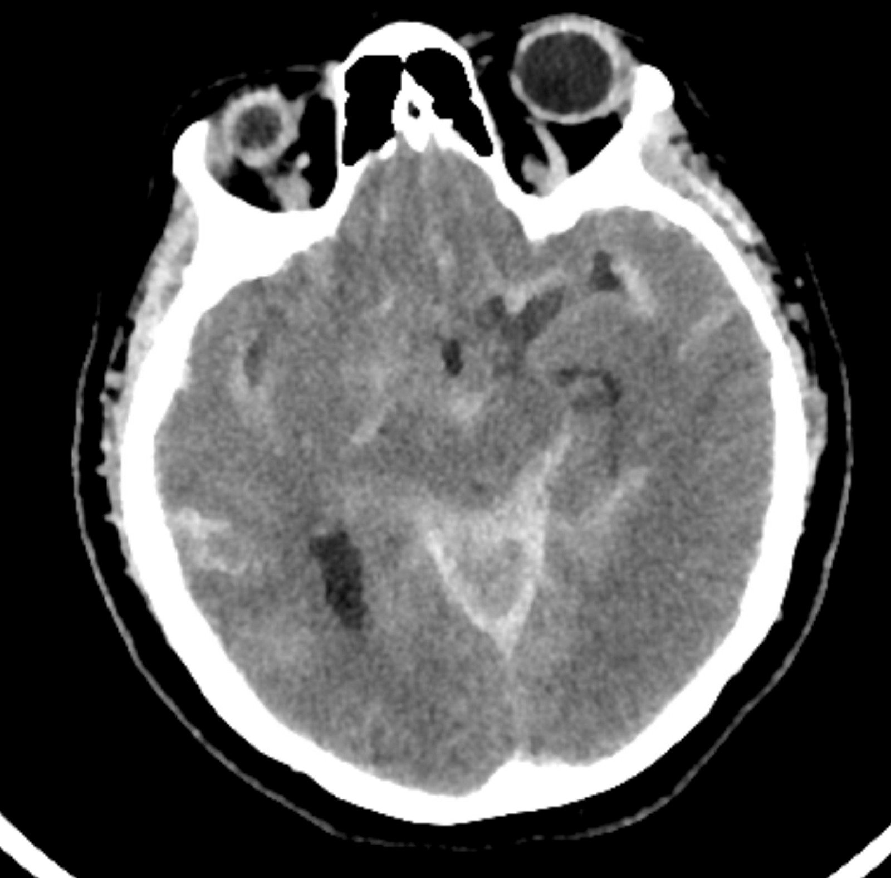
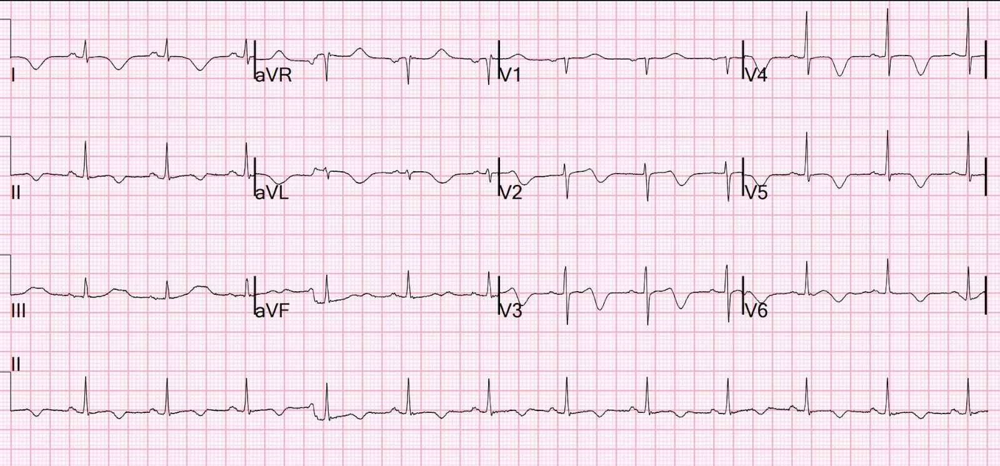
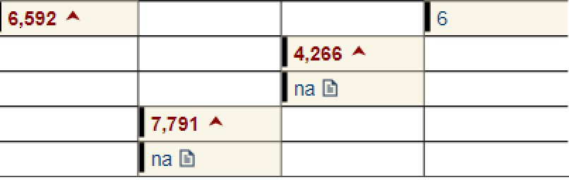
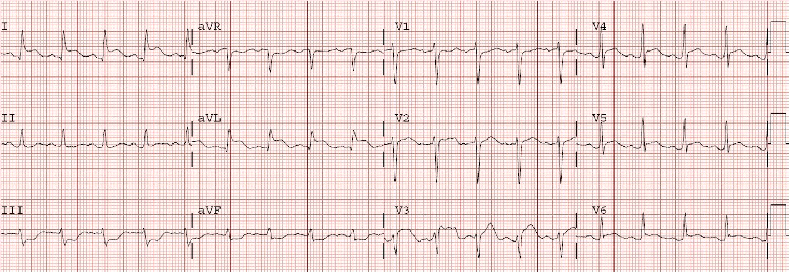
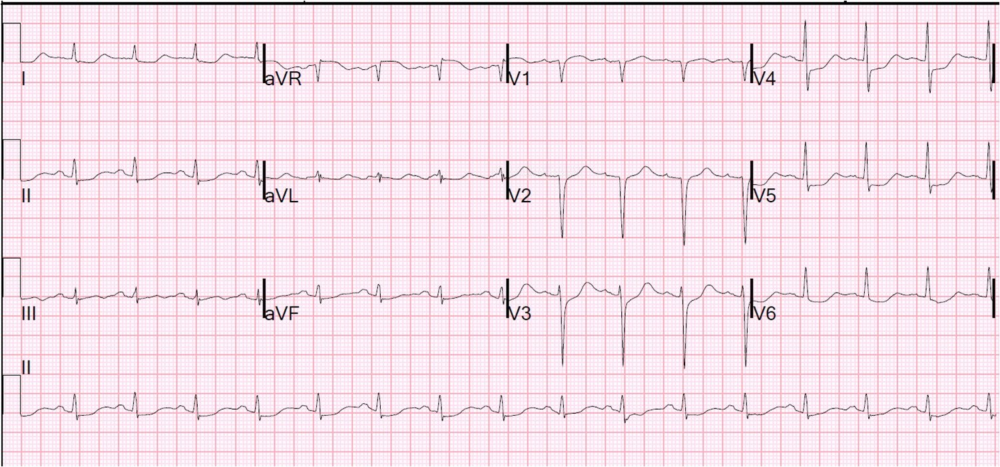
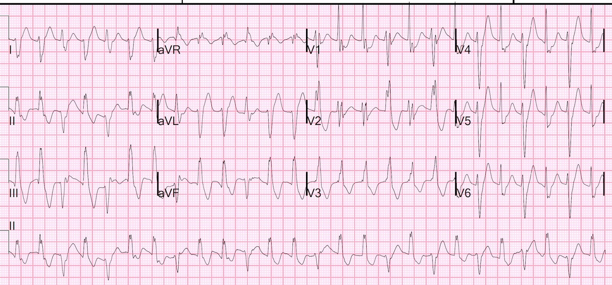
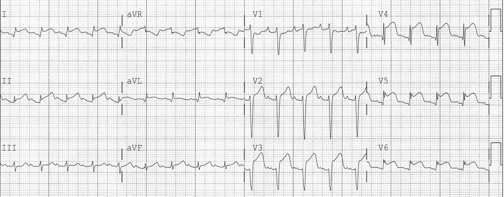
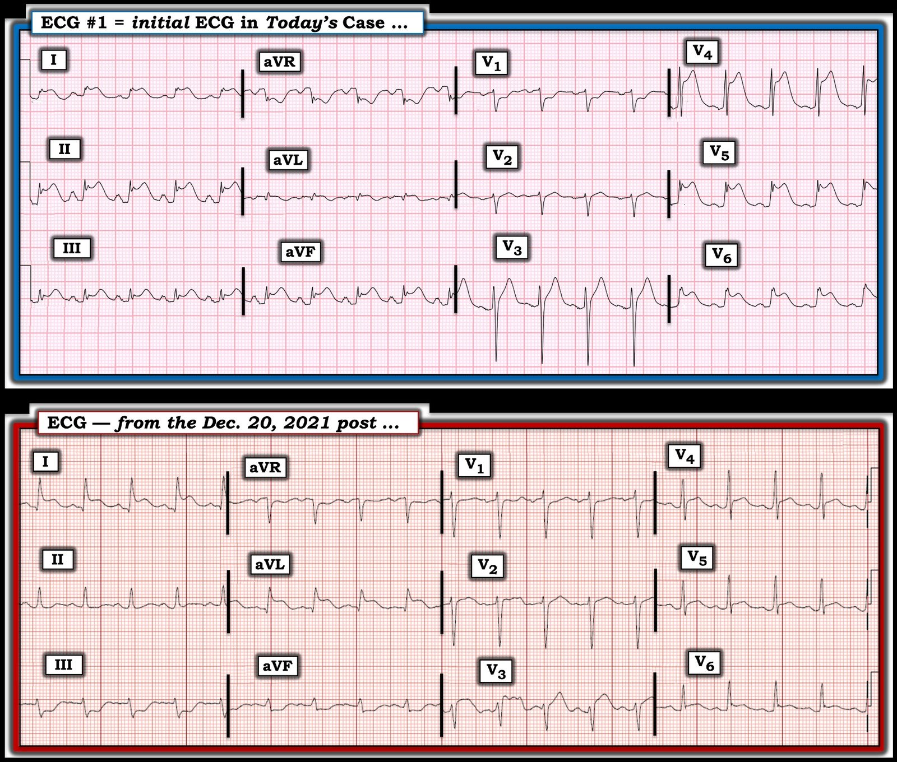

20/02/2025 — Hôn mê cấp, sau đó đột ngột ngừng tim PEA trước mặt nhân viên cấp cứu ngoài viện, kèm STEMI?
Bản dịch tiếng Việt của bài "Acute coma, then Sudden PEA arrest in front of paramedics, with STEMI?" – Dr. Smith’s ECG Blog. Giữ nguyên toàn bộ 10 hình ảnh của bản gốc.
Đây là những gì các nhân viên y tế ở khoa cấp cứu (ED) nắm được khi bệnh nhân đến:
- Bệnh nhân gọi 911 vì ngất, sau đó ngừng tim hoạt động điện vô mạch (PEA) có người chứng kiến sau khi nhân viên cấp cứu ngoài viện đến. Không phải nhịp sốc điện được. Được hồi sức bằng ép tim, epinephrine.
Đây là báo cáo viết của nhân viên cấp cứu ngoài viện, có được sau khi mọi sự việc đã kết thúc:
- Những người chứng kiến thấy bệnh nhân trở nên không đáp ứng. Họ đặt bà nằm xuống sàn và gọi 911. Khi nhân viên cấp cứu đến, mạch còn bắt mạnh và có nhịp thở hấp hối (agonal), với máu chảy ra từ mũi và miệng. Bà được thông khí bằng bóng-mặt nạ (BVM) và hút đàm.
= = =
Một điện tâm đồ 12 chuyển đạo đã được ghi, cho thấy “STEMI”, nhưng không có sẵn.
- Ngay sau đó, mất mạch. Monitor cho thấy một nhịp có tổ chức (không rõ tần số, không rõ độ rộng QRS). Bắt đầu hồi sức bằng ép tim, v.v., kể cả epinephrine, và có tái lập tuần hoàn tự nhiên (ROSC). Không lúc nào có rung thất (VF) hay nhịp nhanh thất (VT), không có nhịp sốc điện được.
- Bà được đưa đến khoa cấp cứu trong tình trạng hôn mê sâu với GCS 3 điểm, các dấu hiệu sinh tồn khác còn duy trì.
= = =
Điện tâm đồ sau đây được ghi khi bệnh nhân đến khoa cấp cứu:


— Bạn nghĩ gì? —
= = =
Trong ca này, chẩn đoán rõ ràng nhờ bệnh sử chính xác (bệnh sử không chính xác cũng gợi ý, nhưng kém hơn).
- (Chỉ dựa vào điện tâm đồ thì chẩn đoán chỉ có thể là nghi ngờ.)
= = =
Bình luận của Scott Sharkey, một chuyên gia về Takotsubo (xem các công trình của ông tại đây):
Điện tâm đồ tuyệt vời, Steve. Tôi nghĩ bản ghi này điển hình cho Takotsubo.
- 1) ST chênh lên ở chuyển đạo chi lớn hơn ở chuyển đạo 2 so với chuyển đạo 3. Như anh biết, trong STEMI thành dưới — chuyển đạo 3 thường có ST chênh lên (STE) lớn nhất.
- 2) Vectơ tổn thương ở chuyển đạo chi hướng về mỏm thất trái (chuyển đạo 2 và -aVR)
Điểm MẤU CHỐT: Bệnh nhân hôm nay đã bất tỉnh TRƯỚC khi ngừng tim, vào lúc bà vẫn còn mạch bắt mạnh. Vì vậy, ngừng tim KHÔNG phải là nguyên nhân gây hôn mê. Hơn nữa, nếu bạn biết rằng xuất huyết nội sọ thảm khốc có thể gây ra điện tâm đồ giả STEMI — thì bạn biết rằng bệnh nhân này nhiều khả năng bị xuất huyết nội sọ nặng.
- Hơn nữa, khi một người được hồi sức ngay lập tức sau ngừng tim có nhân viên cấp cứu ngoài viện chứng kiến, họ hiếm khi có GCS 3 điểm (hôn mê sâu).
- Ngoài ra, ngừng tim do thiếu máu cục bộ (do OMI) hầu như luôn ban đầu là ngừng tim do rung thất (tuy nhiên khi ngừng tim kéo dài, cuối cùng VF sẽ chuyển thành PEA).
Chỉ dựa vào điện tâm đồ: Bản ghi ban đầu này gợi ý bệnh cơ tim do stress, (hay Takotsubo) — do ST chênh lên lan tỏa: II, III, aVF và ở I và aVL. Điều này bất thường trong OMI cấp. Ngoài ra, có STE ở V3-V6, vậy là có tổn thương rất rộng. Hơn nữa, nó không theo đúng lắm một vùng phân bố mạch vành.
- Tổng hợp lại tất cả — Điều này nhiều khả năng nhất phản ánh một xuất huyết nội sọ tự phát nặng, đột ngột, có lẽ là vỡ phình mạch não (xuất huyết dưới nhện).
- Xuất huyết dưới nhện gây phóng thích catecholamine trung ương cực độ, dẫn đến bệnh cơ tim do stress, giống hệt Takotsubo.
= = =
Diễn biến lâm sàng:
Bệnh nhân có độ bão hòa oxy rất thấp và đường B lan tỏa, nặng. Bà bị phù phổi nặng. Đây là nguyên nhân gây ra máu ở mũi và miệng (phù phổi bọt hồng lẫn máu).
- Phù phổi bọt hồng lẫn máu trông như thế này. Từ trang này.


Phòng thông tim (cath lab) đã được kích hoạt, và bệnh nhân được đưa lên đó sau khi được chăm sóc hỗ trợ. Các động mạch vành sạch.
= = =
Có người đã quyết định chụp CT sọ não:


= = =
Điện tâm đồ sau đây được ghi vào ngày hôm sau:


Bản ghi này cho thấy sóng T đảo ngược lan tỏa điển hình, gợi ý bệnh cơ tim Takotsubo.
- Tuy nhiên siêu âm tim thực hiện vào ngày hôm sau không cho thấy rối loạn chức năng tim.
= = =
Diễn biến troponin:


Như bạn có thể thấy, tổn thương cơ tim do co thắt mạch này vì SAH là rất nặng nề!
= = =
= = =
Đây là một ca tương tự:
- Collapse, Ventricular Tachycardia, Cardioverted, Comatose on Arrival. OMI is a clinical diagnosis. (Trụy, nhịp nhanh thất, đã sốc điện chuyển nhịp, hôn mê khi đến viện. OMI là một chẩn đoán lâm sàng.)


= = =
Thêm các ca khác cần nêu bật ở đây:
- https://drsmithsecgblog.com/search?q=subarachnoid (kết quả tìm kiếm trên blog với từ khóa “subarachnoid” – xuất huyết dưới nhện)
= = =
- Middle Aged Woman with Asystolic Cardiac Arrest, Resuscitated: Cath Lab? (Phụ nữ trung niên ngừng tim vô tâm thu, đã được hồi sức: có lên phòng thông tim?)


= = =
- Agitation, Confusion, and Unusual Wide Complex Tachycardia. What is it, why did it occur, and how to treat? (Kích động, lú lẫn và nhịp nhanh QRS rộng bất thường. Đó là gì, vì sao xảy ra và điều trị thế nào?)


= = =
- Two more Cases of Takotsubo Stress Cardiomyopathy (Thêm hai ca bệnh cơ tim do stress Takotsubo)


= = =
==================================
BÌNH LUẬN CỦA TÔI, bởi KEN GRAUER, MD (20/2/2025 — Cập nhật cho WordPress ngày 1/8/2026):
Y học khiến ta khiêm tốn. Và dù tôi chắc chắn đã đưa viêm màng ngoài tim cấp vào chẩn đoán phân biệt khi lần đầu xem ca hôm nay — tôi không nghĩ viêm màng ngoài tim đơn thuần (không có thành phần viêm cơ tim) là khả năng cao. Thay vào đó — tôi nghĩ bệnh nhân này bị tắc LCx cấp. Ca hôm nay là một ví dụ sâu sắc cho thấy Bệnh sử thậm chí còn hơn cả điện tâm đồ trong việc đưa ra chẩn đoán.
- Không may, bệnh nhân hôm nay đã bị ngừng tim PEA (hoạt động điện vô mạch – Pulseless Electrical Activity) ngay sau khi đội cấp cứu ngoài viện đến. Dù chúng ta không có chi tiết các sự việc sau đó — bác sĩ Smith nêu điểm mấu chốt rằng nếu cơn ngừng tim có đội cấp cứu chứng kiến này là hậu quả của một biến cố tim cấp (do đó, có lẽ là VT hoặc VFib) — thì khử rung kịp thời bởi nhân viên cấp cứu có mặt tại chỗ rất có thể đã hồi sức thành công cho bà.
- PEA hiếm gặp khi là nhịp ban đầu được đội cấp cứu ngoài viện (EMS) chứng kiến tại hiện trường nếu nguyên nhân là một biến cố thiếu máu cục bộ cấp. Vì vậy (như bác sĩ Smith nhấn mạnh) — khi ngừng tim ngoài bệnh viện (OHCA – Out-of-Hospital Cardiac Arrest) có EMS chứng kiến và bệnh nhân lập tức rơi vào hôn mê — Hãy nghĩ đến một nguyên nhân khác ngoài nhồi máu cơ tim cấp hay VT/VFib là lý do gây ngừng tim!
= = =
Điện tâm đồ Ban đầu của ca hôm nay
Khi không có bệnh sử — việc diễn giải điện tâm đồ ban đầu của ca hôm nay (mà tôi đã sao lại thành bản ghi PHÍA TRÊN trong Hình 1) rõ ràng là đáng lo ngại.
- Có nhịp nhanh xoang tần số ~115/phút.
- QTc trông kéo dài (dài hơn hẳn một nửa khoảng R-R) — dù việc đánh giá QTc chính xác trở nên khó khăn ở tần số nhanh như thế này.
- Dấu hiệu nổi bật nhất là ST chênh lên lan tỏa, rất rõ (đạt >8 mm ở chuyển đạo V4! ).
- Có ST chênh lên ở 9/12 chuyển đạo — với ST chênh xuống chỉ thấy ở chuyển đạo aVR>V1 (tức là, gần như ngược hẳn với những gì thấy trong thiếu máu cục bộ dưới nội tâm mạc lan tỏa — trong đó có ST chênh xuống lan tỏa trừ ST chênh lên ở aVR>V1).
Thông điệp “cần nhớ” quan trọng: Bệnh sử PEA là nhịp ban đầu được EMS chứng kiến + các dấu hiệu trên điện tâm đồ #1 cho thấy ST chênh lên rõ ở 9/12 chuyển đạo mà không khu trú vào một vùng giải phẫu cụ thể (như thường thấy trong nhồi máu cơ tim cấp) — nên lập tức gợi ý “một điều gì khác” ngoài VT/VFib và/hoặc nhồi máu cơ tim cấp là nguyên nhân.
- Theo bác sĩ Smith — Thông tim âm tính — và bệnh nhân bất hạnh hôm nay đã tử vong vì SAH (xuất huyết dưới nhện – SubArachnoid Hemorrhage) nặng nề.
- Theo kinh nghiệm của tôi — các thảm họa thần kinh trung ương (CNS) (không chỉ SAH hay các xuất huyết CNS khác — mà cả u não — chấn thương — co giật — hôn mê do nguyên nhân khác) có thể gây ra một số điện tâm đồ trông kỳ quái nhất. Nhầm những ca như vậy là một biến cố tim cấp không hiếm gặp vì những thay đổi điện tâm đồ này. Nhận thức được khả năng “giả nhồi máu cơ tim” trong những ca này là thiết yếu để tránh những lần thông tim không cần thiết, có thể làm chậm trễ điều trị có khả năng cứu sống.
= = =
Hình 1: So sánh giữa điện tâm đồ ban đầu của ca hôm nay (PHÍA TRÊN) — với điện tâm đồ ban đầu trong bài ngày 20 tháng Mười Hai năm 2021, trong đó bệnh nhân cũng bị xuất huyết dưới nhện gây tử vong.


= = =
Điện tâm đồ của Một ca khác:
Ở PHÍA DƯỚI của Hình 1, tôi đã sao lại một điện tâm đồ còn gây bối rối hơn, lấy từ một bệnh nhân khác tử vong vì SAH lượng lớn (từ bài ngày 20 tháng Mười Hai năm 2021).
- ST chênh lên ít lan tỏa hơn và ít rõ hơn kèm ST chênh xuống soi gương ở các chuyển đạo thành dưới — minh họa một số xuất huyết CNS có thể giống OMI cấp đến mức nào.
- Một lần nữa — Bệnh sử tỏ ra là MẤU CHỐT để hướng tới chẩn đoán (tức là, bệnh nhân này bị trụy nhưng chưa bao giờ mất mạch — và dù được sốc điện chuyển nhịp kịp thời, bà vẫn hôn mê sâu).
= = =
Thay đổi điện tâm đồ trong SAH:
Một tổng quan y văn nhanh của tôi cho thấy những điều sau liên quan đến thay đổi điện tâm đồ trong SAH:
- Bất thường điện tâm đồ cực kỳ thường gặp trong SAH (dường như nhiều hơn hẳn so với các loại xuất huyết CNS khác). Tỷ lệ phần trăm trong các bài báo tôi xem xét dao động, tùy theo tiêu chuẩn được chọn cho “bất thường điện tâm đồ”. Dù vậy — “chủ đề chung” là bất thường điện tâm đồ là một dấu hiệu được dự đoán trước, đặc biệt trong SAH.
- QTc kéo dài dường như là bất thường gặp nhiều nhất — nhưng còn có bất thường sóng T (đôi khi là sóng T “khổng lồ”) — độ lệch đoạn ST (cả chênh lên lẫn chênh xuống, dù ST chênh xuống dường như gặp nhiều hơn trong SAH theo y văn tôi đã xem xét) — và đôi khi, sóng Osborn và/hoặc sóng U.
- Đủ mọi loại rối loạn nhịp có thể gặp — bao gồm nhịp nhanh xoang và nhịp chậm xoang ( = hai đầu đối lập của phổ — có lẽ tùy thuộc vào việc trương lực giao cảm còn tăng hay không — hay bệnh nhân giờ đang mất bù do tăng áp lực nội sọ) — cũng như toàn bộ các loại nhịp SVT và nhịp thất (kể cả VT).
- Cơ chế gây bất thường điện tâm đồ trong SAH chưa chắc chắn — nhưng phần lớn các nhà nghiên cứu cho rằng do tăng trương lực giao cảm trung ương (tức là, bùng phát catecholamine — dẫn đến hoặc “choáng” cơ tim hoặc rối loạn điều hòa tự chủ).
- Các bài báo tôi đã xem xét gồm — (Poudel và cs. — Cureus 15(6): e40045, 2023) — (Chatterjee — Neth Heart J 19:31-34, 2011) — (Yogendranathan và cs. — BMC Cardiovasc Dis 17(91)- 2017) — (Ibrahim và Macdonald — Stroke 43(8): 2102-2107, 2012) — (Levis — Permanente J 21:16-049, 2017).
= = =
= = =